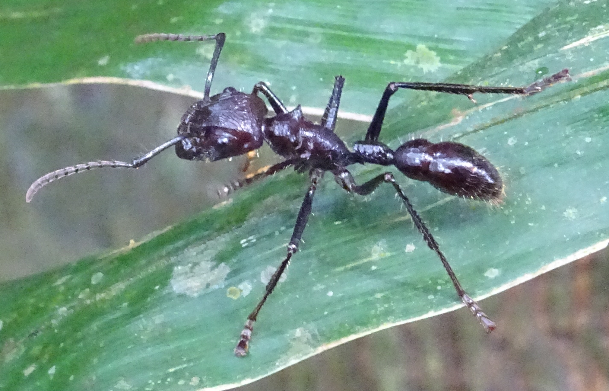

Paraponera clavata

Вторые по размеру муравьи, после Dinoponera, парапонера являются самыми опасными представителями муравьиного мира. У них самый токсичный яд из известных науке насекомых. Они создают весьма многочисленые семьи, превыщающие 1 000 особей. Бывают как моно-, так и полигинные колонии. Наблюдается и некий полиморфизм, когда самые мелкие занимаются расплодом, а самые крупные фуражем и защитой гнезда. Абдомен матки заметно увеличен по отношению к другим особям.Парапонера строят глубокие гнезда до 65 см в глубину. Для этого они выбирают основания растений или расщелины в корнях деревьев. Зачастую гнезда имеют 1 вход и 1 чёрный выход (обычно он идёт от самой низкой галереи). От вертикального тоннеля в разные стороны отходит множество длинных и высоких галерей, всегда строят глубкий дренажный канал вниз от гнезда.Фуражируют преимущественно в тёмное время суток. Ориентируюясь по феромоновым дорожкам. Опытные фуражиры учатся и запоминают местность, что позволяет им использовать местные ориентиры, для поиска гнезда или охоты. Парапонера - поверхностный зоонекрофаг, тоесть питается как мертвечиной так и живыми жертвами, чаще всего это крупные насекомые и иногда мелкие позвоночные. Жертв они режут на части и переносят домой, личинки поедают кусочки без предварительной обработки со стороны рабочих. Парапонера сильно падка на нектар и жидкие сладости. В природе часто собирают его с растений и пьют сок, надрезая кору. Могут потреблять его в диких количествах, поэтому иногда их причесляют к "медовикам". Внутри гнезда рабочие кормят нектаром личинок оставляя массивные капельки или трофаллаксисом. Эти мураши достаточно заботливые родители, часто устилают пол гнезда различчным растительными остатками и укладывают на них личинок и расплод, это позволяет личинкам пить оставленые жидкости и содржать в нужной атмосфере куколки.Парапонера неагрессивный муравей, если не трогать его и не пугать. При опасности он начинает выделять мускусный феромон и шипеть, но если и это не поможет то атакует жалом. А примечательная черта этого муравья - это яд - Понератоксин. Он представляет из себя парализующий пептид нейротоксин и блокирует ионные синаптические каналы. Вызывает локальный паралич и волновые импульсы горячей адской боли. Действие яда продолжается 24 часа (за что муравей и получил своё имя) и только потом начинает спадать. Из-за токсичности яда очень высока возможность аллергической реакции, которая может перейти в анафилаксию и возможно привести к смерти. Самый лучший способ облегчить свои страдания - это не трогать муравья =) А медицинские: охладить конечность в воде со льдом. Проглотить максимальную дозу капсул Бенедрила (Benedryl - антигистамин), чтобы противостоять возможному аллергическому ответу. Эта комбинация эффективно смягчает боль и вызывает сонливость, расслабление или сон в течение кульменации действия реакции на яд. В случае более серьезной реакции, типа затруднённого дыхания или глотания (признаки анафилаксии, отёки лёгких и верхних дыхательных путей), принять EpiPens (самовводимый адреналин), Proventil (астматик) ингалятор, и Преднизон (стероид) таблетки, все предписанное врачом. (Внимание: Последнее только в присутствии врача или по его срочной рекомендации). В любом случае после первых мер, необходимо позвонить врачу и назвать яд, место укуса, предпринятые меры, срок отравления, ну и адрес конечно-же.
Другие названия: муравей-пуля (bullet-ant), муравей-24 часа (24-hour ant)
Особенности: полиморфизм, имеется жало
Кaсты: рабочие, солдаты, фуражиры
Размеры: 18-25мм
Количество королев: моногиния, полигиния
Размер кoлонии: 1K—3K
Тип муравейника: подземные, без наружных построек
Типичное местообитание: Неотропическая зона островных низинных дождевых лесов
Зимовка: нет сведений
Питание: всеяден
Влажность: обычная ≈ 94%
Температура: пониженная ≈ 25—27°С
Сложность содержания: сложно
Подвижность: средняя
Подпишись
у нас уже 5 человек